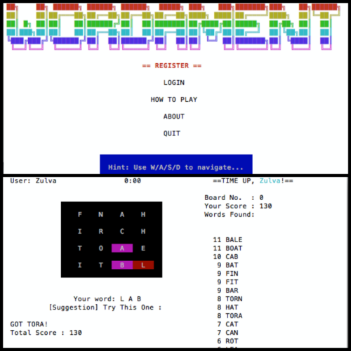

Wordament 0
Wordament 0 is a simple replica of Wordament, word puzzle game published by Microsoft Studios in 2012, except it can only be played in command line, not mobile phone. Wordament 0 was developed in C Programming Language and using various Data Structures such as Stack, List, Queue, and Point.